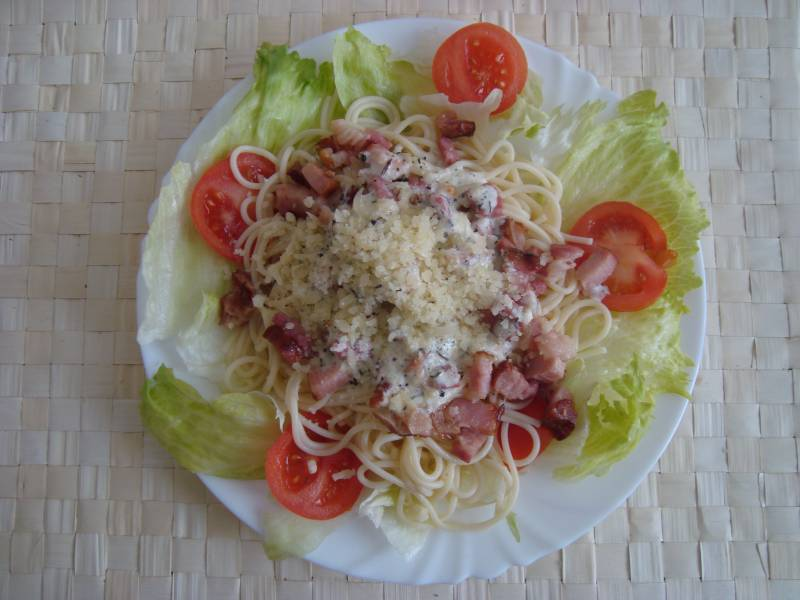

No a aby toho nebylo málo, přispěju ještě receptem z dnešního vydatného oběda. Inspirací mi opět byla příloha “Vaříme se sýrem”. Nevýhodou je, že nějakou dobu poté nebudete chtít sýr ani vidět :D…
- špagety
- čerstvá bazalka
- 250 ml smetany
- 1 lžička balzamikového octa
- 50 g šunky
- různé druhy sýrů(já použila nivu, blaťácké zlato a náš kroměřížský, ale záleží, jaké máte chutě :-)…)
- mletý pepř
- nastrouhaný eidam na posypání
Špagety uvaříme a scedíme. Smetanu vlijeme do hrnce a postupně v ní na mírném ohni rozpustíme všechny druhy sýra. Vzniklou omáčku ochutíme pepřem a balzamikovým octem. Šunku nakrájíme najemno a opečeme. Hotovou omáčku vmícháme do špaget, jednotlivé porce posypeme šunkou, bazalkou a strouhaným eidamem. Můžeme ještě přidat čerstvá rajčátka a pro nás milovníky pytlík oliv :-)…

Varianta s anglickou slaninou a čerstvým salátem :)
Komentáře (1)
Komentáře jsou uzavřené.